<!DOCTYPE html>
<html lang="pt-br">

</html>

<head>
    <meta charset="UTF-8">
    <meta name="viewport" content="width=device-width, initial-scale=1.0">
    <link rel="stylesheet" href="styles.css">
    <title>Reflexo Do Horizonte Arco-Íris</title>


</head>

<body>
    <header>
        <div class="logo1">
            
            <titulo>
                <h1>Reflexo do Horizonte</h1>
            </titulo>
        </div>

    </header>
    <main>

        <aside>
            <h1>O Arco-Íris</h1>
            <h1>Formação do Arco-Íris</h1>
            <h1>Processos Ópticos</h1>
            <h1>Características do Arco-Íris</h1>
            <h1>Descoberta do Arco-Íris </h1>
            <h1>Cores do Arco-Íris</h1>
            <h1>Curiosidades sobre o Arco-Íris</h1>
            <h1>Tipos de Arco-Íris</h1>
            <h1>Atividades Sobre o Assunto</h1>
        </aside>


        <section>
            <div class="botao">
                <dir class="arco">
                    <a href="index.html">
                        <p class="botaoArco">Arco-Íris</p>
                    </a>
                </dir>

                <dir class="mira">
                    <a href="Miragens.html">
                        <p class="botaoMira">Miragem</p>
                    </a>
                </dir>
                </dir>
            </div>

            <h2 class="sesao">O Arco-Íris</h2>
            Um arco-íris é um fenômeno óptico formado pela refração da luz solar em gotas de água, resultando em um arco
            multicolorido com sete cores: vermelho, laranja, amarelo, verde, azul, anil e violeta. Esse efeito ocorre
            quando há luz e água na atmosfera. Pode ser reproduzido com um prisma de vidro. Portanto, ao olhar para o
            céu, você está vendo as cores de várias gotículas de chuva que estão em diferentes alturas e posições. As
            gotas que estão na altura que refrata a luz vermelha estarão formando uma faixa que, vista de longe, aparece
            como o arco superior do arco-íris. Abaixo, outras gotas refratam a luz laranja e assim por diante. Assim, o
            que você vê não são apenas feixes de luz isolados, mas sim várias gotículas que, em conjunto, refletem as
            cores organizadas em um arco, devido à sua disposição em relação ao observador. 

            <h2 class="sesao">Formação do Arco-Íris</h2>
            Luz Branca do Sol: A luz solar é radiação eletromagnética visível ao olho humano. Ao passar pelas gotas de
            água, essa luz é refratada e dividida em sete núcleos que compõem o arco-íris. <br><br>
            Gotas de Água como Prisma: As gotículas de água funcionam como um prisma natural, separando a luz branca em
            diferentes comprimentos de onda, que observamos como núcleos. <br><br>
            Condições para observação: O arco-íris é frequentemente observado após a chuva, quando há gotas de água no
            ar e a luz solar incide acima do observador. <br>

            <h2 class="sesao">Processos Ópticos</h2>
            Refração: Ocorre quando a luz passa de um meio (ar) para outro (água). Uma onda de luz desacelera, causando
            a separação dos núcleos.<br><br>
            Reflexão Interna Total: Dentro da gota, a luz é refletida internamente e sofre nova refração ao sair,
            resultando em ângulos diferentes de entrada e saída. <br><br>
            Dispersão: A separação da luz em componentes espectrais ocorre quando uma luz branca incide sobre uma gota
            de água, resultando em um feixe colorido. <br>

            <h2 class="sesao">Características do Arco-Íris</h2>
            O arco-íris aparece quando o Sol está no lado oposto do observador e geralmente a uma altura baixa no céu,
            como durante o pôr do sol. <br><br>
            As cores são dispostas em um padrão específico, com luz vermelha na parte superior e luz azul na parte
            inferior. <br><br>
            Cada cor se refrata em um ângulo específico. Por exemplo, o vermelho em cerca de 42° e o azul em 40°. Isso
            significa que cada gota de água reflete uma única cor em um ângulo que depende da sua altura e da posição do
            observador. <br>

            <h2 class="sesao">Descoberta do arco-íris </h2>
            A descoberta do arco-íris começou com René Descartes, que, em 1637, foi a primeira pessoa a observar e
            tentar explicar esse fenômeno natural. Ele replicou o efeito utilizando uma esfera cheia de água e concluiu
            que o arco-íris resulta de reflexões dentro das gotículas de água. Descartes também notou que poderia
            ocorrer uma segunda reflexão, permitindo a observação de um arco-íris secundário mais fraco, próximo ao arco
            primário.  <br><br>
            Posteriormente, Isaac Newton aprofundou o estudo do arco-íris ao investigar a decomposição da luz com
            prismas. Ele demonstrou que a luz branca é composta por todas as cores do arco-íris e revelou que a luz
            vermelha se refrata menos do que as luzes azuis e violeta. Essas contribuições científicas foram
            fundamentais para a compreensão dos fenômenos ópticos associados ao arco-íris. <br>
        
            <div class="Descoberta">
                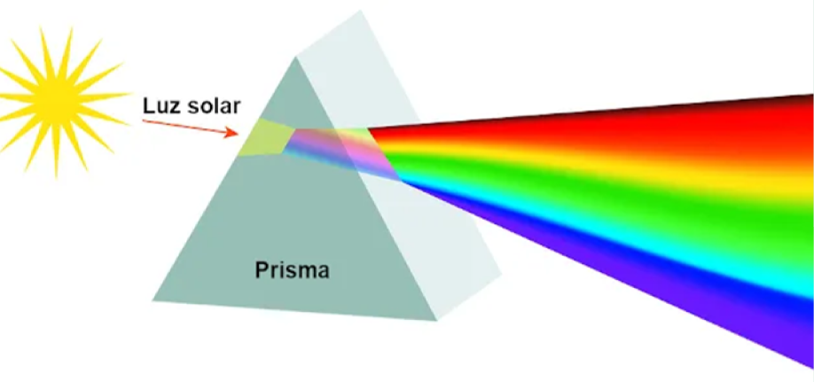
            </div>

            <h2 class="sesao">Cores do Arco-Íris</h2>
            As cores do arco-íris são frequentemente descritas em sete faixas: vermelho, laranja, amarelo, verde, azul,
            anil e violeta. No entanto, muitas pessoas conseguem identificar apenas seis cores. Isso ocorre porque
            algumas cores são consideradas mais intensas e, portanto, mais fáceis de enxergar. As cores que costumam ser
            mais perceptíveis incluem azul, violeta, vermelho, amarelo e verde. Por outro lado, o laranja e o anil nem
            sempre são visíveis, pois apresentam uma intensidade menor, tornando-se mais difíceis de distinguir. Essa
            percepção pode variar de acordo com as condições de luz e a visão individual de cada pessoa. <br>

            <div class="coresarcoiris">
                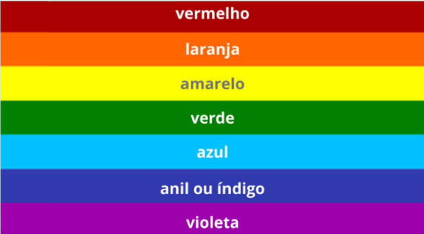
                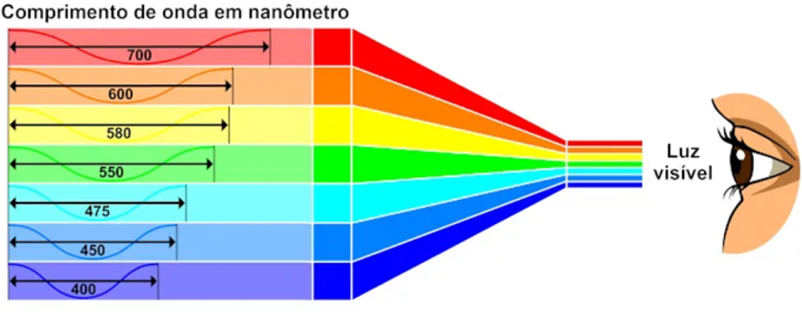
            </div>

            <h2 class="sesao">Observação e Ilusão Óptica</h2>
            O arco-íris não é um objeto físico, trata-se de uma ilusão óptica cuja visualização depende da posição
            relativa do observador. Embora todas as gotas refratem e reflitam a luz da mesma forma, apenas algumas cores
            resultantes desse processo são captadas pelos olhos do observador. Se precisar de mais informações ou
            configurações, estou à disposição .

            <h2 class="sesao">Curiosidades sobre o Arco-Íris</h2>
            <p><b>Origem do Nome:</b> A palavra "íris" vem da mitologia grega, onde a deusa Íris era a mensageira divina que
            deixava um rastro multicolorido no céu.</p><br>

            <p><b>Cultura Iorubá:</b> Na cultura Iorubá, o arco-íris é associado ao orixá Oxumarê, considerado um mensageiro
            divino. </p><br>

            <p><b>Newton e as Cores:</b> Isaac Newton identificou inicialmente cinco cores no arco-íris e adicionou mais duas para
            fazer analogia com as sete notas musicais.</p><br>

            <p><b>Locais Favoráveis:</b> Locais próximos a cachoeiras são ideais para observar o fenômeno do arco-íris. </p><br>

            <p><b>Arco-Íris Lunar:</b> A lua cheia pode também gerar arco-íris, conhecidos como arco-íris lunares, que são mais
            fracos.</p> <br>

            <p><b>Céu Azul:</b> A dispersão da luz branca, como ocorre no arco-íris, é responsável pela coloração azul do
            céu. </p><br>

            <p><b>Pôr do Sol:</b> A refração da luz branca provoca a cor alaranjada do pôr do sol, devido ao maior caminho que a
            luz percorre na atmosfera. </p><br>

            <p><b>Ilusão de Óptica:</b> O arco-íris é uma ilusão de ótica, cuja visualização depende da posição do observador em
            relação ao Sol.</p><br>

            <p><b>Condições para Formação:</b> Para o arco-íris se formar, o Sol deve estar em baixa altitude, com um ângulo
            pequeno em relação ao observador.</p> <br>

            <p><b>Ângulo de Refração:</b> Os raios de luz se refratam nas gotículas de chuva em ângulos de 40° a 42°, dependendo
            da cor.</p> <br>

            <p><b>Curvatura:</b> Embora a luz se propague em linha reta, o arco-íris é curvo devido aos ângulos formados pelos
            raios refratados.</p> <br>

            <p><b>Posição do Observador:</b> Para ver um arco-íris, é necessário estar na direção oposta ao Sol. </p><br>

            <p><b>Limitações do Solo:</b> Não vemos um círculo completo do arco-íris devido à obstrução do solo. Em altitudes
            elevadas, como em aviões, é possível ver o círculo completo. </p><br>

            <p><b>Gotas de Água:</b> O arco-íris não depende da chuva, mas sim das gotículas de água suspensas no ar.</p><br>

            <p><b>Percepção Única:</b> Cada pessoa vê as cores do arco-íris de forma única, pois a luz refletida e refratada varia
            conforme a posição e a perspectiva de cada observador. </p><br>

            <h2 class="sesao">Tipos de Arco-Íris</h2>

            <div class="linha">
                <div class="imagem">
                    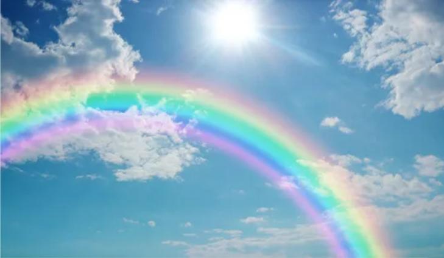
                    <p class="legenda"><b>Arco-íris Simples:</b> O tipo mais comum, visível como um arco multicolorido no céu, com os núcleos dispostos na seguinte ordem: vermelho, laranja, amarelo, verde, azul, anil e violeta. </p>
                </div>
    
                <div class="imagem">
                    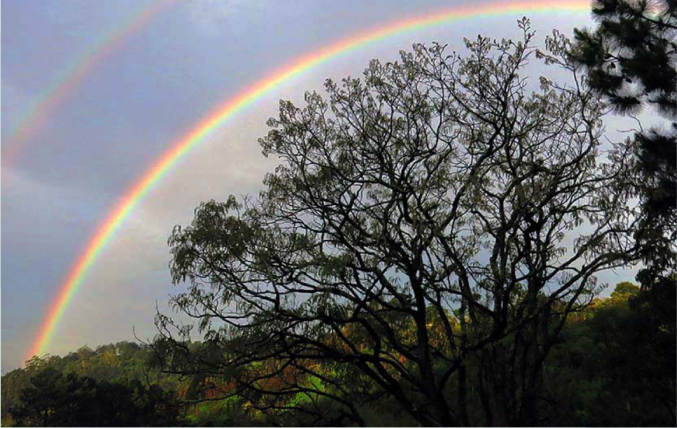
                    <p class="legenda"><b>Duplo Arco-íris:</b> Um aspecto em que um arco mais fraco aparece acima do arco principal. O segundo arco tem as cores invertidas em relação ao primeiro, devido a uma segunda reflexão da luz dentro das gotas de água. </p>
                </div>
    
                <div class="imagem">
                    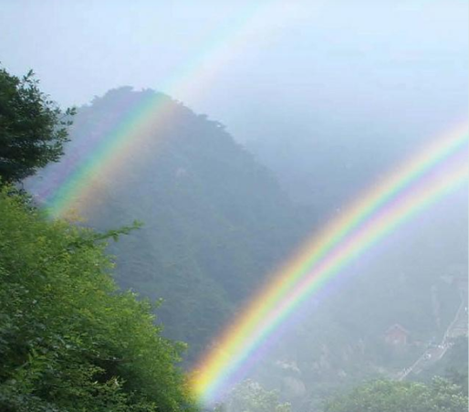
                    <p class="legenda"><b>Arco-íris Gêmeos:</b> Também conhecido como arco-íris geminado, ocorre quando a luz atinge gotas de diferentes tamanhos e formatos, resultando em dois arcos que se separam de uma única base, mantendo a mesma ordem das cores do arco primário. </p>
                </div>
            </div>
            
            <div class="linha">
                <div class="imagem">
                    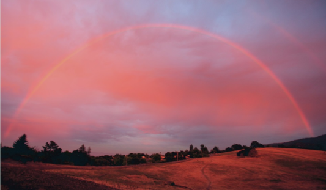
                    <p class="legenda"><b>Arco-íris Vermelho ou Monocromático:</b> Geralmente aparece ao nascer ou pôr do sol, quando a luz solar viaja mais longe na atmosfera. Neste caso, comprimentos de onda mais curtos são espalhados, permitindo que apenas o cor vermelha seja visível. </p>
                </div>

                <div class="imagem">
                    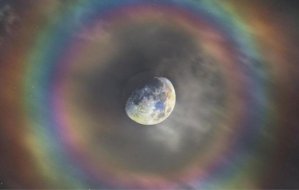
                    <p class="legenda"><b>Arco-íris Lunar:</b> Um fenômeno raro que ocorre à noite, formado pela luz refletida pela lua. Devido à menor intensidade da luz lunar em comparação com a luz solar, o arco-íris lunar é geralmente mais fraco. </p>
                </div>

                <div class="imagem">
                    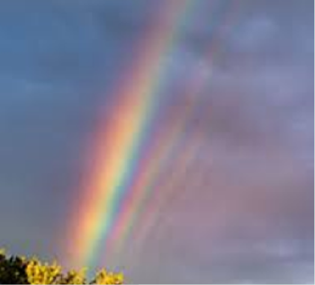
                    <p class="legenda"><b>Arcos Supranumerários:</b> Fenômenos raros que aparecem como faixas adicionais de cores mais brigas dentro ou fora do arco-íris principal. Eles são causados por interferência entre os raios de luz dentro das gotas de água. </p>
                </div>

            </div>


            <div class="linha">
                <div class="imagem">
                    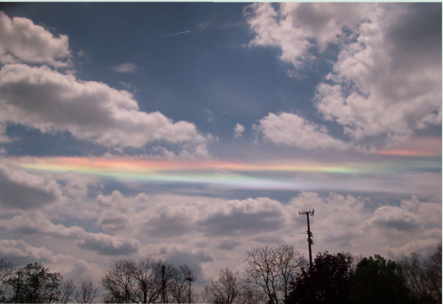
                    <p class="legenda"><b>Arco-íris de fogo:</b> ou arco circum-horizontal, é um fenômeno raro que se forma quando a luz do sol está acima de 58º, refletindo nos cristais de gelo das nuvens Cirrus. Para que ocorra, é necessário um encontro preciso entre a luz solar e a nuvem, o que não é comum. Geralmente, ele é mais visível em dias de verão, quando os raios solares são mais intensos e as cores ficam mais nítidas. Esse fenômeno não acontece em latitudes muito baixas, onde os raios solares estão em ângulos mais baixos. </p>
                </div>

                <div class="imagem">
                    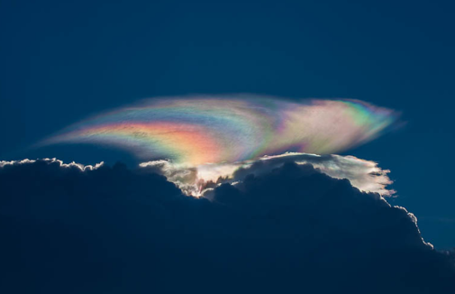
                    <p class="legenda"><b>Irisação:</b> A irisação é um fenômeno que ocorre quando a luz solar se decompõe em sete cores do arco-íris ao passar por gotículas de água ou cristais de gelo na atmosfera. Isso faz com que as cores fiquem difusas e pareçam "se espalhar" pelas nuvens. A irisação se forma principalmente em nuvens cirrocumulus, a cerca de 6 km de altura, e em algumas nuvens altocumulus, que estão entre 2 km e 4 km. Essas nuvens não causam chuvas, mas permitem capturar imagens do sol por trás das cores vibrantes. </p>
                </div>

                <div class="imagem">
                    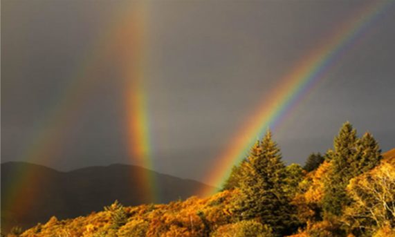
                    <p class="legenda"><b>Triplo Arco-Íris: </b>O Triplo Arco-íris é uma aparência atmosférica extremamente rara, visível apenas nas condições específicas. Ele exibe três arcos coloridos diferentes no céu, cada um resultante de uma complexa interação de refrações e reflexões da luz solar nas gotas de chuva. Esse tipo de arco-íris é tão raro que muitos não o presenciam ao longo da vida, sendo mais provável em ambientes com umidade elevada e luz solar em</p>
                </div>

            </div>

            <br> <br>

            <h2 class="sesao">Questões sobre o assunto</h2>

            <hr>

            <p><h3>1) Quando o arco-íris normalmente aparece no céu?</h3></p>
            <ol type="A">
                <li>) Quando o Sol está no mesmo lado do observador.</li>
                <li>) Durante a noite. </li>
                <li>) Quando o Sol está diretamente acima do observador. </li>
                <li>) Quando o Sol está no lado oposto do observador e a uma altura baixa no céu. </li>
                <li>) Somente em dias nublados. </li>
            </ol>
            <label for="toggle-1"></label>
            ←Clique aqui para ver a resposta
            </label>
            <input type="checkbox" id="toggle-1">
            <div id="mostra">
                <b>Resposta correta:</b> D) Quando o Sol está no lado oposto do observador e a uma altura baixa no céu.
            </div>
            <hr>


            <p><h3>2)  Quem foi a primeira pessoa a tentar explicar cientificamente o arco-íris? </h3></p>
            <ol type="A">
                <li>) Isaac Newton</li>  
                <li>) Albert Einstein</li> 
                <li>) René Descartes</li> 
                <li>) Galileo Galilei</li> 
                <li>) Nikola Tesla</li> 
            </ol>
            <label for="toggle-1"></label>
                ←Clique aqui para ver a resposta
            </label>
            <input type="checkbox" id="toggle-1">
            <div id="mostra">
                <b>Resposta correta:</b> C) René Descartes</li>
            </div>
            <hr>

            <p><h3>3) Qual condição é essencial para a formação de um arco-íris visível no céu? </h3></p>
            <ol type="A">
                <li>) A presença de neblina espessa e baixa pressão atmosférica.</li>  
                <li>) O Sol precisa estar alto no céu, próximo ao seu ponto máximo.</li> 
                <li>) O Sol deve estar no lado oposto ao observador e relativamente baixo no céu.</li> 
                <li>) É necessário que o observador esteja diretamente de frente para o Sol ao meio-dia</li> 
                <li>) O céu deve estar completamente coberto por nuvens.</li> 
            </ol>
            <label for="toggle-1"></label>
                ←Clique aqui para ver a resposta
            </label>
            <input type="checkbox" id="toggle-1">
            <div id="mostra">
                <b>Resposta correta:</b> C) O Sol deve estar no lado oposto ao observador e relativamente baixo no céu.
            </div>
            <hr>

            <p><h3>4) O ângulo de refração da luz vermelha em um arco-íris é aproximadamente de: </h3></p>
            <ol type="A">
                <li>) 35°</li>  
                <li>) 40°</li> 
                <li>) 42°</li> 
                <li>) 38°</li> 
                <li>) 44°</li> 
            </ol> 
            <label for="toggle-1"></label>
                ←Clique aqui para ver a resposta
            </label>
            <input type="checkbox" id="toggle-1">
            <div id="mostra">
                <b>Resposta correta:</b> C) 42°
            </div>
            <hr>

            <p><h3>5)  Quais locais são mais favoráveis para observar o fenômeno do arco-íris?: </h3></p>
            <ol type="A">
                <li>)  Em desertos secos e sem umidade.</li>  
                <li>)  Próximo a áreas urbanas com grande poluição.</li> 
                <li>)  Em locais com forte incidência de luz solar, sem nenhuma água por perto.</li> 
                <li>)  Próximo a cachoeiras, onde há gotículas de água suspensas no ar.</li> 
                <li>)  Apenas no mar aberto.</li> 
            </ol> 
            <label for="toggle-1"></label>
                ←Clique aqui para ver a resposta
            </label>
            <input type="checkbox" id="toggle-1">
            <div id="mostra">
                <b>Resposta correta:</b> D) Próximo a cachoeiras, onde há gotículas de água suspensas no ar.
            </div>
            <hr>

            <p><h3>6) Qual das alternativas descreve um arco-íris simples? </h3></p>
            <ol type="A">
                <li>) Um arco-íris com três arcos visíveis, cada um de cor diferente.</li>  
                <li>) Um arco multicolorido com as cores dispostas na seguinte ordem: vermelho, laranja, amarelo, verde, azul, anil e violeta.</li> 
                <li>) Um arco que aparece somente durante a noite.</li> 
                <li>) Um arco que contém apenas as cores primárias, visível durante tempestades</li> 
                <li>) Um arco que se forma sem chuva, visível apenas no horizonte.</li> 
            </ol> 

            <label for="toggle-1"></label>
                ←Clique aqui para ver a resposta
            </label>
            <input type="checkbox" id="toggle-1">
            <div id="mostra">
                <b>Resposta correta:</b> B) Um arco multicolorido com as cores dispostas na seguinte ordem: vermelho, laranja, amarelo, verde, azul, anil e violeta.
            </div>

            <hr>
            <br>

        <div class="tcontato">
            <h4>Em caso de dúvidas entre em contato conosco!</h4>
        </div>
            <div class="tabelacontato">
                <table border="10" >
                    <tr>
                        <td>Nome do desenvolvedor</td>
                        <td>Email</td>
                        <td>Instagram</td>
                    </tr>
                    <tr>
                        <td>Maria Clara De A. Patta</td>
                        <td>maria.patta@aluno.senai.br</td>
                        <td>@clara_patta</td>
                    </tr>
                    <tr>
                        <td>Lívia Luque Monarin</td>
                        <td>lívia.monarin@aluno.senai.br</td>
                        <td>@luk_luart</td>
                    </tr>
                    <tr>
                        <td>Wuallan Meira Gomes D'Avilla</td>
                        <td>wuallan.davilla@aluno.senai.br</td>
                        <td>@Wuallan_D'Avilla</td>
                    </tr>
                    <tr>
                        <td>Flávio José De Souza Nascimento</td>
                        <td>flavio.j.nascimento6@aluno.senai.br</td>
                        <td>@Saikkwy</td>
                    </tr>
                </table>
            </div>

            <br>
            <hr>


        </section>
    </main>

    <footer>
        
        <h5> Todos os direitos reservados aos desenvolvedores: Wuallan D'Avilla - Flávio Jose - Lívia Luque - Maria
            Clara Patta</h5>

    </footer>

</body>


</html>